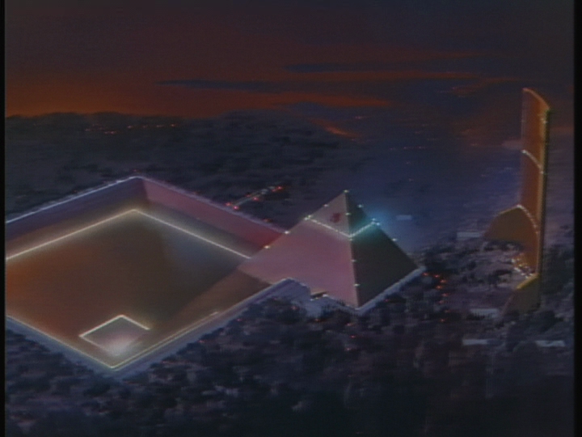
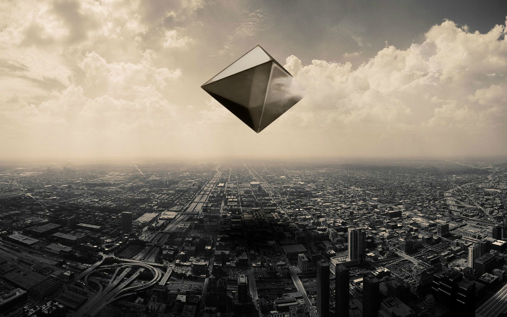

Somos uma organização para-militar especial criada para combater os Anjos depois do Segundo Impacto, no momento, a organização responsável pela criação dos Evangelions.
Embora a Nerv esteja sob o controle das Nações Unidas, é uma organização independente nas operações. As Nações Unidas são a fonte de financiamento da Nerv, cobrindo custos com renda, equipamentos e suas operações.
A Nerv é composta por pessoal de segurança, técnicos em diversas áreas, equipes de manutenção para os Evangelions, e equipes de resgate
Há muitos divisões e filiais da Nerv ao redor do mundo.
O principal QG está localizado logo a baixo de Tokyo-3 dentro da caverna GeoFront. Nerv-01 é a primeiro filial da Nerv localizada em Massachusetts, EUA. A Nerv-02 está localizada no estado de Nevada, também nos EUA.
O Quartel General da Nerv (QG da Nerv) (ou Sede da Nerv) é a principal base de operações da Nerv, construída dentro da caverna subterrânea GeoFront logo abaixo de Tokyo-3.
O quinto anjo, Ramiel (ラ ミ エ ル, Ramieru ), é um octaedro azul translúcido e oco, com um tom mais claro de azul na metade superior e um tom mais escuro na metade inferior. Ramiel se defende com um feixe de partículas de prótons que dispara de seu equador horizontal que atinge automaticamente qualquer objeto hostil em um determinado raio ou qualquer ameaça direta fora dele.
Ramiel foi derrotado por Rei e Shinji em um ataque coordenado (a primeira operação dos dois pilotos juntos). O plano geral foi nomeado Yashima (ヤ シ マ 作 戦). Shinji na Unidade 01 estava armado com um canhão de pósitron experimental para atirar no Anjo à distância, Rei na Unidade 00 foi equipado com um escudo especial (supostamente um escudo de proteção térmica de um ônibus espacial desativado) para defender a Unidade 01. O canhão de pósitron necessitou de toda a força do Japão para operar e o escudo só poderia desviar o feixe de partículas de Ramiel por 17 segundos.
Pouco antes de Shinji estar prestes a atirar em Ramiel, ele reagiu e atirou nele exatamente ao mesmo tempo...
Gendo Ikari (碇ゲンドウ[?], "Ikari Gendō")
Na Nerv, Gendo é responsável pela reutilização dos Evangelions no combate contra anjos que vão em direção ao GeoFront.
Organização e obrigação são fatores cruciais em seu método de reação, o que for necessário fazer, será feito, pelo bem da humanidade.